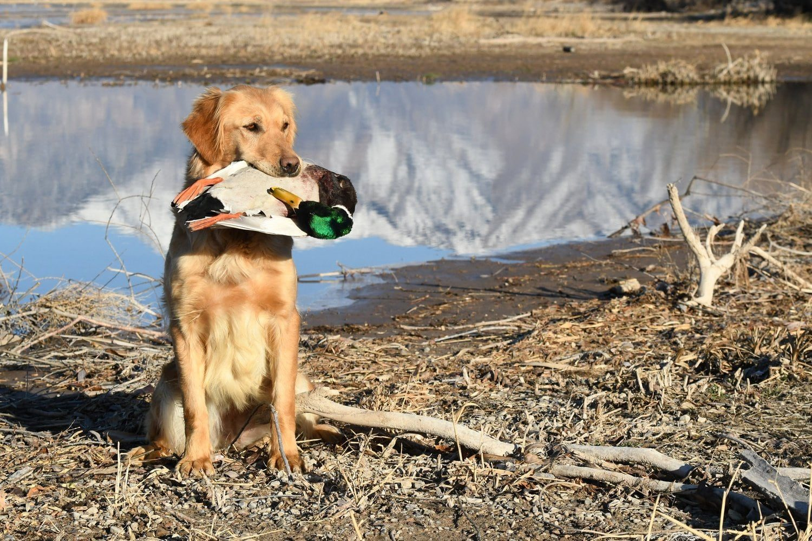
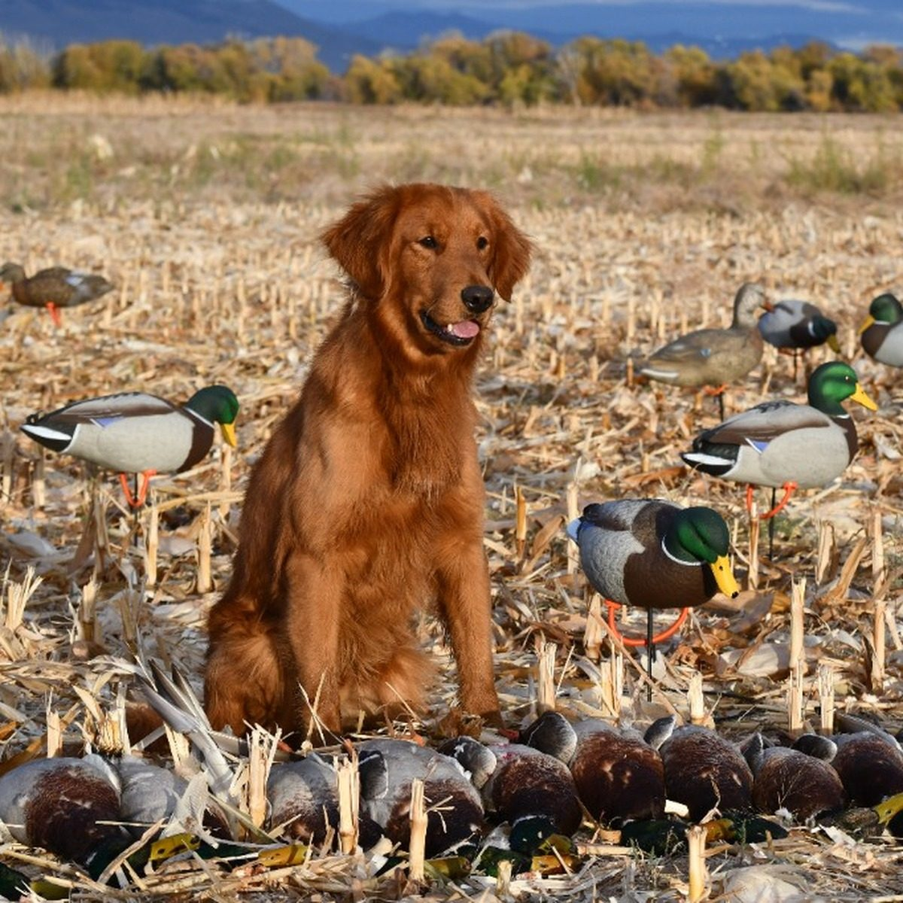
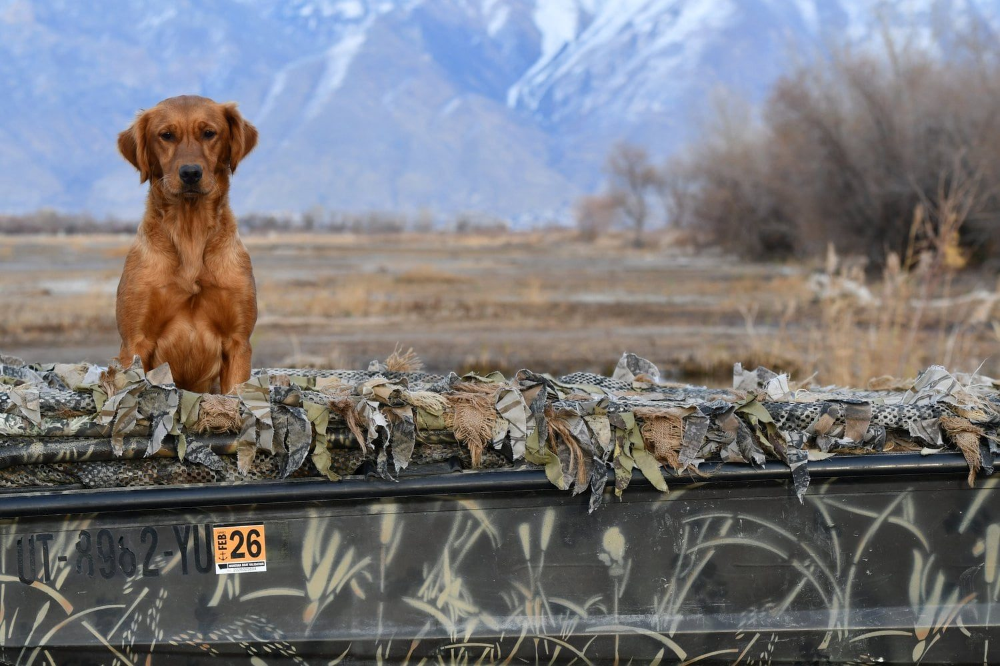
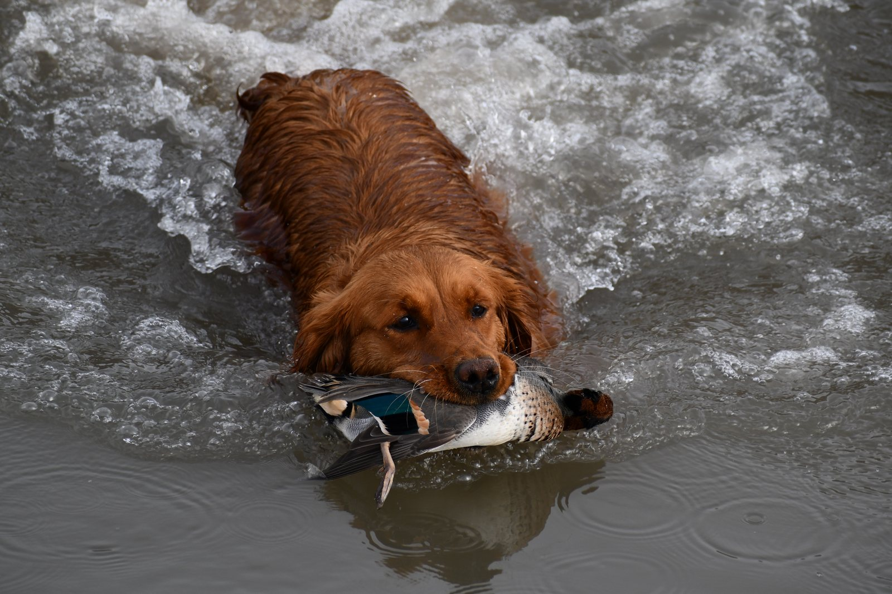

Yes, fireworks can contribute to a negative association with loud noise in some hunting dogs.
That does not mean every dog that is scared of fireworks will become gun shy.
Fireworks and gunfire are different sounds and happen in different situations.
But if a dog has a strong negative experience with fireworks and begins associating sudden loud noise with fear, I would take that seriously before introducing or reintroducing gunfire.
The main thing I watch is the dog’s demeanor.
Does the dog stop acting like itself when the loud noise begins?
Fireworks fear does not automatically mean gun shyness
A hunting dog may react differently to fireworks than it does to gunfire.
Some dogs may be uncomfortable with fireworks but remain confident around properly introduced gunfire.
Others may develop a broader concern around sudden loud noise.
That is why I would not label every dog that is frightened by fireworks as gun shy.
But I also would not ignore a strong reaction.
Watch for a change in the dog’s normal behavior
A dog does not need to run away to show that it is afraid.
Some hunting dogs may stay right next to their owner during fireworks.
That can look like the dog is handling the noise.
But ask whether the dog is acting normally.
Watch for:
- Becoming unusually still.
- Staying glued to the owner.
- Losing interest in food.
- Stopping play.
- Refusing to retrieve.
- Becoming tense.
- Lowering its energy.
- Trying to move somewhere quieter.
- Acting differently than it did before the fireworks started.
Those changes can indicate that the dog is uncomfortable even if it never tries to escape.

Why this matters for a hunting dog
A hunting dog eventually needs to be comfortable around live gunfire.
If the dog has already developed a strong negative association with loud noise, I would be more cautious about how I introduce a shotgun.
I would not assume:
“The dog hunts hard, so gunfire will override the fireworks fear.”
Sometimes strong prey drive helps us work through gunfire.
But if fear becomes more important than the bird or retrieve, the dog may shut down.
Do not test the dog with a gun after fireworks
One of the biggest mistakes I see is owners testing dogs with loud noise.
If the dog was scared during fireworks, I would not go out the next day and fire a shotgun to see whether it is still okay.
That test can become another bad experience.
Instead, let the dog return to normal.
Then approach sound gradually.

Start with positive activity
Before introducing live gunfire, I want the dog doing something it enjoys.
For hunting dogs, that may be:
- Birds.
- Retrieving.
- Chasing.
- Hunting.
- Play.
- Movement.
The positive activity should already be strong before the gun is added.
- 1Positive activity first
- 2Sound far away
- 3Watch demeanor
- 4Closer only if the dog stays itself
Start live gunfire far away
When you eventually return to live gunfire, start at a distance where the sound is barely noticeable to the dog.
The gun should be pointed away.
If we are working with birds, we may throw the bird and fire near the top of the bird’s arc.
Then we watch the dog.
Does it keep going after the bird?
Does it keep retrieving?
Does its energy remain the same?
If so, that is a good sign.
If the dog shuts down, slow down.

The bird should be more important than the gun
This is a simple rule I use.
If the dog cares more about the bird than the gunfire, we may be in a good place.
If the gun becomes more important than the bird, we have probably gone too far.
You may see:
- The dog stop retrieving.
- The dog return toward the handler.
- Less bird interest.
- Less range.
- Lower energy.
- More focus on the shooter.
Those are signs to back up.
Controlled sound work can help before live gunfire
If the dog had a strong reaction to fireworks, it may make sense to do controlled sound work before going back to a shotgun.
That is one reason I created Gunshy Fix.
The program uses calming music and progressively introduces gunfire recordings.
It gives the dog a more controlled environment where sound can be introduced gradually.
Use the dog’s demeanor to progress
Start at a comfortable level.
The dog should be able to:
- Eat.
- Play.
- Retrieve.
- Relax.
- Move around normally.
- Act like itself.
If the dog remains comfortable, you can gradually progress.
If the dog’s behavior changes, go back.
The dog sets the pace.
Can fireworks create a long-term problem?
They can contribute to one.
A single loud-noise event does not guarantee that a dog will have permanent gun issues.
But repeated bad experiences can strengthen fear.
That is why I would rather respond early than keep exposing the dog and hope it works itself out.
What if the dog has hunted successfully before?
A dog that has hunted successfully in the past may still develop a negative association after a bad loud-noise experience.
If that happens, I would not assume the old gunfire confidence will automatically return.
Watch the dog carefully the next time gunfire is introduced.
If the demeanor changes, back up.
What if the dog is a puppy?
Be even more careful.
A puppy does not need to be tested with fireworks or gunfire.
The goal is to build a positive relationship with sound gradually.
If a puppy reacts negatively to fireworks:
- Do not keep testing.
- Return to positive activities.
- Use quieter sound exposure.
- Progress slowly.
- Introduce live gunfire only when the puppy is comfortable.
When should you get professional help?
Professional training may be useful if:
- The dog has a severe fireworks reaction.
- The dog starts reacting negatively to gunfire.
- The dog stops hunting or retrieving.
- The dog repeatedly shuts down when the gun gets closer.
- You do not have birds or safe training property.
- You do not have another person to help with the gun.
- You are unsure whether the dog is truly comfortable.
A professional setup can help control distance, birds, timing, and live-gun progression.
The main thing to remember
Fireworks do not automatically make every hunting dog gun shy.
But a strong negative fireworks experience can matter.
Watch the dog’s demeanor.
Do not test the dog with more loud noise.
Rebuild confidence gradually.
And when live gunfire is introduced again, start far away and keep the dog focused on something positive.
Build back toward gunfire gradually
Gunshy Fix gives owners a controlled way to work on gunfire sounds at home before returning to live field training.
The lessons combine calming music with progressively introduced gunfire recordings so the dog can move forward according to its comfort level.